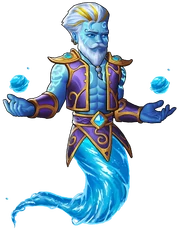
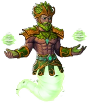
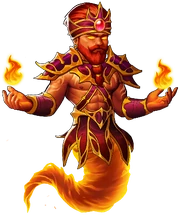
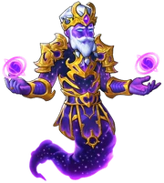

Azhar is a genie and one of the guardians in the game. Azhar unlocks when your personal tree of life is at least level 50. He can attack ten times per second and provides your heroes with the all attributes aura.
In the harsh desert lands of the Cauldron, where the sands whisper secrets, the stars paint the skies with magic and orks paint everything with blood, live the enigmatic genies. Creatures of awe-inspiring power, they are born of the sacred smokeless flames, their essence dancing with the elements themselves.
Everchanging and shifting their bodies, genies spirits are as volatile as their form. Some remain unburdened by the scales of good or evil. They wander the desert dunes, free spirits woven into the fabric of the world, ever watchful of those who dared cross their paths.
Some genies form unbreakable bonds with humans, showering them with blessings or testing their mettle through trials, imparting wisdom and fortune with a touch of whimsy.
Some, of course, were less benevolent. Cursed souls who found themselves drawn to desolate lands and abandoned ruins. Forever yearning, they feed on the flesh of the departed, seeking solace in the memories of the living. Yet, among their shadowy hunger, glimmers of their past lives lay buried, awaiting redemption and a flicker of hope.
Amidst the shifting sands, the shaitans dance, cloaked in malice and deceit. These malevolent genies revel in chaos, weaving illusions that ensnared unwary travelers. They delight in making bargains that tempted the hearts of mortals, savoring the price of a soul sold in despair.
Beyond the dunes, the ifrits roam, masters of flame and fury. Their fierce spirits, borne of raging infernos, could unleash destruction upon the realm, or bring warmth and light to those who earned their favor. Few could withstand their fiery trials and emerge unscathed, for their passion burned like the sun.
Some genies are born of the boundless seas, which encircle the Cauldron. With strength that moved the tides and depths that held untold secrets, they command the vast ocean expanse – and deserted land where the ocean has given birth and way to soil. They are powerful and fickle, as capricious as the waves they rode, yet their wisdom flow as endlessly as the waters.
In the heart of every genie lay the essence of a choice—to embrace their true nature or transcend it, to befriend mortals or lead them astray. Their stories are woven together in a grand tapestry, an ever-evolving tale of power, temptation, redemption, and the intricate dance of magic and humanity.
Jinn
In the realm of Alandria, the interaction between genies and humans is a tapestry woven with threads of destiny. Some mortals summoned genies with enchanted lamps or ancient incantations, seeking wishes that would shape their lives forever. Yet, wise are those who sought friendship instead of desires, for the bond between a mortal and a genie could transcend time and echo through the ages.
Since a time long forgotten, in the ancient lands of Cauldron, there lived a powerful jinn named Azhar. He was a being of air, untouched by the forces of good or evil, and he wandered the deserts and oases, observing the mortal world with curious eyes.
One fateful day, Azhar encountered our noble warriors, who were leading a valiant charge against a relentless Undead army that threatened to plunge the realm of Alandria into darkness. Impressed by their courage and determination, Azhar decided to lend his ethereal abilities to aid the cause. He fights alongside the mighty party, summoning mystic orbs and elementals spells.
The bond between the jinn and the warriors deepened, and they shared many adventures, facing hordes of Undead creatures together. And so the story of a friendship between mortals and jinn has begun – but where it will end, only whispering sands might know.

Ghul
As the battles grew more intense, and the chill of the Undead began to seep into Azhar's essence, he found himself increasingly drawn to the dark waters of their realm. Consuming the mystical waters where the fallen foes lingered fueled his strength, transforming him into a Ghul, a corrupted and conflicted version of his former self. The once airy jinn Azhar became a being of water, his form shimmering with a dark, liquid grace.
As Azhar immersed himself in the water of the Undead, he could feel a sinister transformation taking hold of him. The power coursing through his veins from absorbing the enchanted waters was intoxicating, but it came at a great cost. With each passing day, he felt his soul growing darker, his once ethereal form now tainted by the depths of shadowed waters. The once neutral and benevolent jinn Azhar slipped away, giving in to the dark that haunted the undead he fought against.
Azhar's once brilliant and warm demeanor became tinged with a devilish allure. His powers intensified, but so did his willingness to use them for darker purposes, and these tactics sometimes sent shivers down the spines of those who once revered him.
Sometimes the party would confront Azhar about his transformation, but the genie's eyes would flicker with a dangerous gleam. "Do not meddle in matters you cannot comprehend, mortal," Azhar would hiss, the echoes of his former self still present but overshadowed by his newfound malevolence.

Shaitan
Azhar's victory over the darkness of the Ghul marked a turning point in his journey, but the struggle was far from over. As he and the heroes continued their relentless battle against the Undead, a new challenge emerged. Azhars power as a jinn of water began to wane, dried up as if in the desert - and he felt the sands and the earth beneath him calling, tempting him with its strength and stability. The allure of power consumed Azhars thoughts, and the whispers of forces unknown surrounded him. He felt the pull of becoming a Shaitan, able to manipulate the very fabric of nature and terrains to his will, was almost too enticing to resist.
Yet, deep within his heart, Azhar knew that such power would come at a great cost, not only to himself but also to his mortals friends and the realm they had sworn to protect. The struggle between the desire for supremacy and the call of his true nature raged on within him, threatening to consume his soul once again.
Our heroes sensed the turmoil in their friend and became his anchor. "Azhar, you are not defined by the power you possess, but by the choices you make. Do not let the temptation of the Shaitan blind you to the path of righteousness. We have come too far to surrender to darkness now."
And as the water would feed the soil to prosper, so Azhar's powers combined in this new stage of his elemental powers mastery.

Ifrit
As they fought side by side, heroes' words echoed in Azhar's mind. He realized that he had to confront the darkness within himself, and he summoned all his inner strength to resist the pull of the malevolent whispers. With their support and unwavering belief in him, Azhar found the resolve to reject the path of the Shaitan. In a moment of clarity, Azhar channeled his inner fire, purging the temptations that plagued his mind. The cleansing fire burned away the darkness, leaving behind a genie burning bright.
Through his defiance, Azhar emerged stronger, and a newfound sense of purpose filled his being. He realized that his true power came from the bonds of friendship, love, and the desire to protect the realm and its people.
The battle against the undead continued, but a profound change had taken root within Azhar. The cleansing fire of his resolve had not only purged the malevolence but also ignited a newfound clarity of purpose. He understood that his destiny was not to give in to darkness but to rise above it and become a force of light.
With each victory over the undead, Azhar's flame burned brighter, and his powers as an Ifrit surged to new heights. No longer consumed by the allure of evil, he channel his fiery energies to protect and defend his friends.
Azhar's transformation into an Ifrit was more than just a change in form — it was a metamorphosis of his soul. The burning essence within him symbolized not only the fire that he wielded but also the determination to rise above his past and become a beacon of hope in a world threatened by darkness.

Marid
As they face the Undead armies, Azhar's control over his fiery powers became more refined. However, even as the Ifrit, Azhar knew that fire alone could not vanquish all the undead. Some creatures were immune to flames or thrived in the inferno. In a moment of introspection, Azhar realized that to truly protect the realm, he needed to embrace all the elements, not just fire.
One fateful day, as they stood atop a cliff overlooking the realm, gazing at the vastness of the sea, an epiphany struck Azhar like a bolt of lightning. Air, Water, Earth, Fire – the elements he had gone through – together, and only together they were the keys to complete his transformation and become the embodiment of strength and unity.
Heroes saw the intensity in Azhar's eyes and sensed the revelation in his heart. They nodded with understanding, and descended to the shores, and Azhar casted himself from the cliff into the churning waves. As the sea engulfed him, Azhar surrendered to the elemental flow, embracing its fluidity and power. The once fiery Ifrit began to change, his essence melding with the water, his very substance thrown by the forces of water and stormy winds against the coastal rocks. From the depths of the ocean, he emerged as a majestic Marid, a being of unparalleled might, possessing command over the elements combined - and the wisdom that came along.
Now, as a Marid, Azhar's elemental mastery knows no bounds. He becomes a paragon of balance and wisdom, no longer constrained by the limitations of his former self. The bond between Azhar and the heroes had grown even stronger, as they fight together as a seamless unit, their hearts and minds intertwined.
{kind=link}
{kind=link}
{kind=link}
{kind=link}
{kind=link}
{kind=link}
{kind=link}
{kind=link}
{kind=link}
{kind=link}